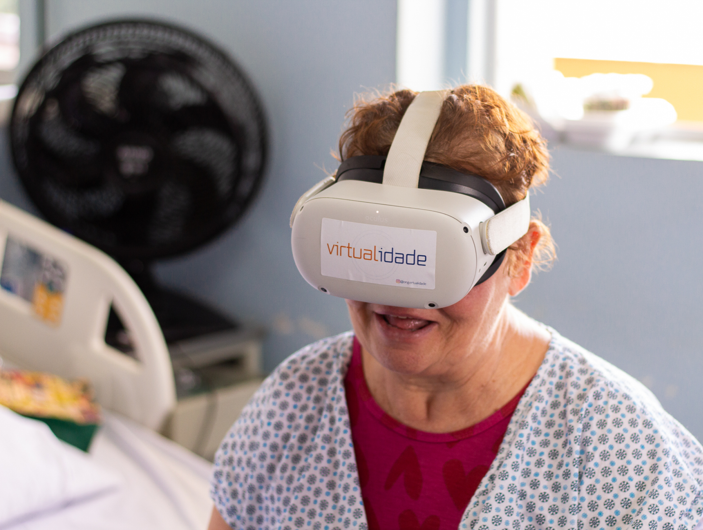
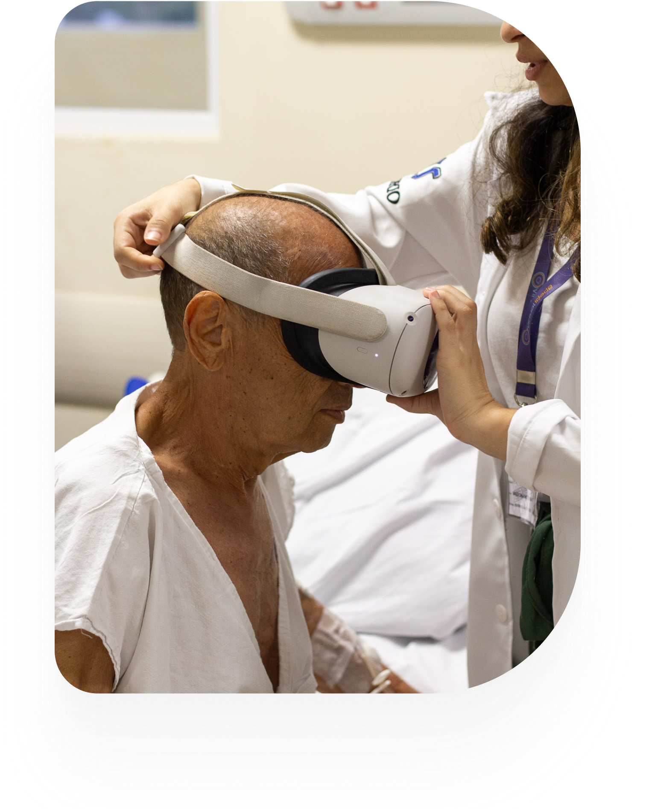

ONG Virtualidade
Acreditamos que a virtualidade é uma "potencialidade que se concretiza no real". Para um paciente em isolamento hospitalar, a capacidade de "viajar" não é apenas entretenimento — é dignidade.


Ciência, Empatia e Virtualidade
A tecnologia como ponte para o bem-estar.
Voluntariado no SUS
Atuamos de forma gratuita em hospitais públicos.
Experiência Imersiva
Visitas virtuais a lugares e memórias afetivas.
Impacto Comprovado
Redução da ansiedade em pacientes.